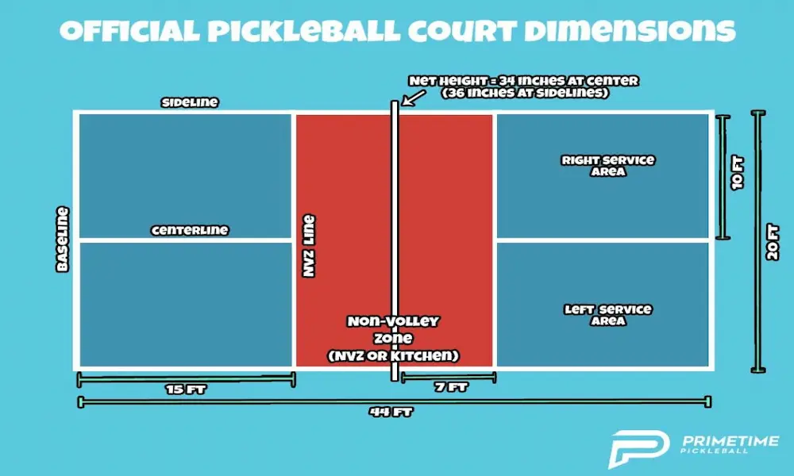

Rules of Pickleball

The Court
A pickleball court measures 20 feet wide by 44 feet long, the same size as a doubles badminton court. The court contains a 7-foot non-volley zone on each side of the net, commonly called "the kitchen."
Serving Rules
- The serve must be hit underhand.
- The paddle must contact the ball below waist level.
- The serve must land in the opposite service box.
- Only one serve attempt is allowed.
The Double Bounce Rule
After the serve, the receiving team must allow the ball to bounce once before returning it. The serving team must also allow the return to bounce once. After those two bounces, either team may volley or play the ball after a bounce.
The Kitchen Rule
Players may not volley the ball while standing inside the non-volley zone, also known as the kitchen. A player may enter the kitchen only after the ball has bounced.
Scoring
- Most games are played to 11 points.
- A team must win by at least 2 points.
- Only the serving team can score points.
- Tournament formats may use different scoring systems.
Quick Rules Quiz
How many points are usually needed to win a standard pickleball game?